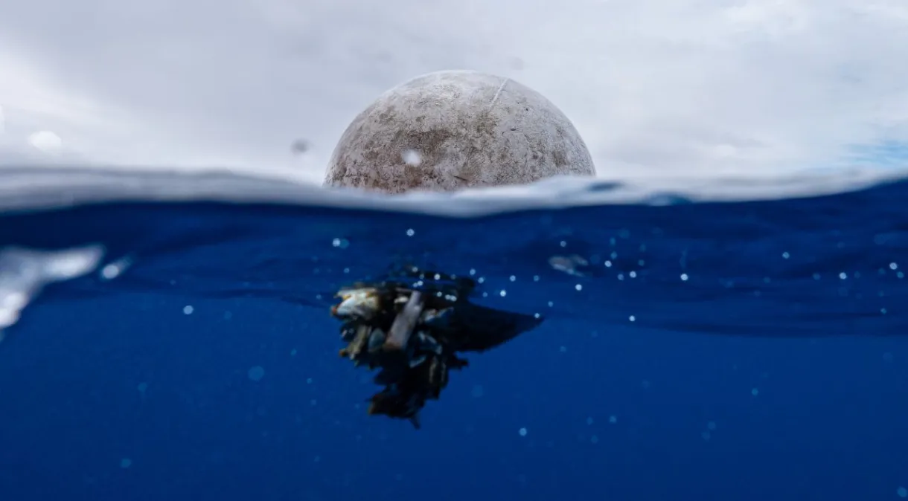

Veja algumas notícias sobre esse tema...
-

Oceanos têm mais de 170 trilhões de partículas de plástico, diz estudo.
-
Como o mundo pode reduzir poluição plástica em 80% até 2040.
-
Poluição ambiental: Cientistas encontram formigas emaranhadas em plástico; veja fotos...
-
Pesquisadora encontra rochas feitas de plástico em arquipélago no Espírito Santo.